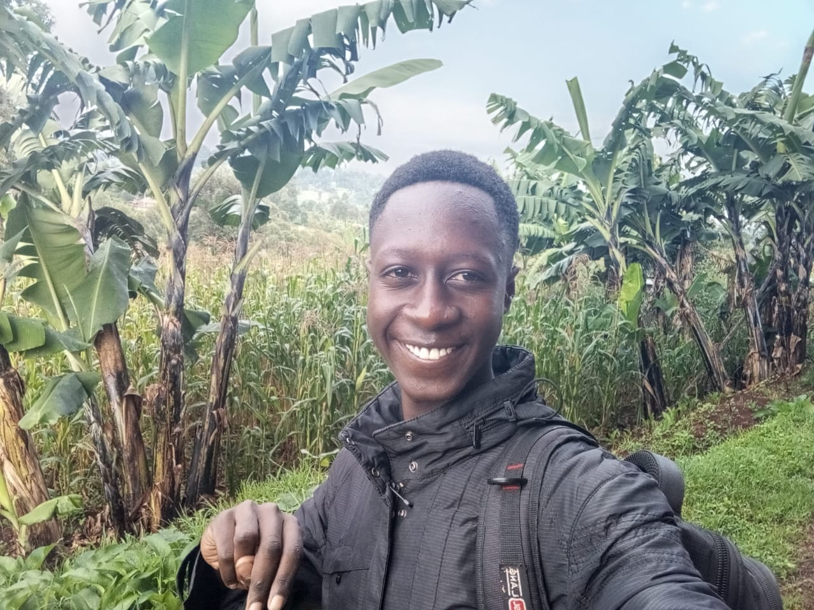

HOME

Join me on this creative journey as I share my passion for design of websites. Explore my portfolio to
view a curated selection of my life, where I strive to blend beauty with functionality. Discover my
latest lifestyle, insights, and the stories behind my life.
Welcome to the world of Jesse Makori
ABOUT ME

I’m Jesse Makori, a passionate student of Electrical and Electronics. I’m deeply interested in how
technology can shape our future and excited to learn more every day. As a Christian, my faith plays a
central role in my life, guiding my values and decisions.
I believe in the power of joy and positivity, and I strive to bring energy and enthusiasm into every
interaction. Whether I'm working on a project or just hanging out with friends, I love creating an
environment that’s fun and engaging. I look forward to connecting with you and sharing this journey
together.
EDUCATION

Current Pursuit
I am currently pursuing a Bachelor's degree in Electrical and Electronics Engineering and I am in my second
year.
University
I transferred to Machakos University in 2024, where I am continuing my studies.
Additional Learning
In addition to my degree, I am also studying programming, which complements my engineering education and
enhances my skill set in technology.
SKILLS

Programming Languages
Proficient in a variety of programming languages including C, C++, HTML, CSS, and JavaScript. I enjoy tackling
complex challenges and creating dynamic web applications that offer seamless user experiences.
other skills
A passionate artist and performer, I love expressing my creativity through drawing and acting. Whether it’s
bringing characters to life on screen or illustrating captivating visuals, I thrive in the creative process and
enjoy collaborating on projects in film and the arts.
BACKGROUND

I hail from the vibrant Nyanza region of Kenya, where I spent my early years immersed
in the rich culture and community of my hometown. However, my journey took a pivotal turn when I moved to
Nairobi, the bustling capital city, for further education and personal growth.
Nairobi, with its dynamic energy and diverse opportunities, shaped my perspectives and aspirations. The
experiences I gathered in this vibrant metropolis laid the groundwork for my ambitions.
Currently, I've relocated to Machakos in Eastern Kenya to pursue my college studies. This beautiful region
offers a unique blend of tradition and modernity, making it an inspiring place for my academic and personal
journey. My experiences across these diverse environments have deeply influenced my outlook on life and
driven my passion for growth and learning.